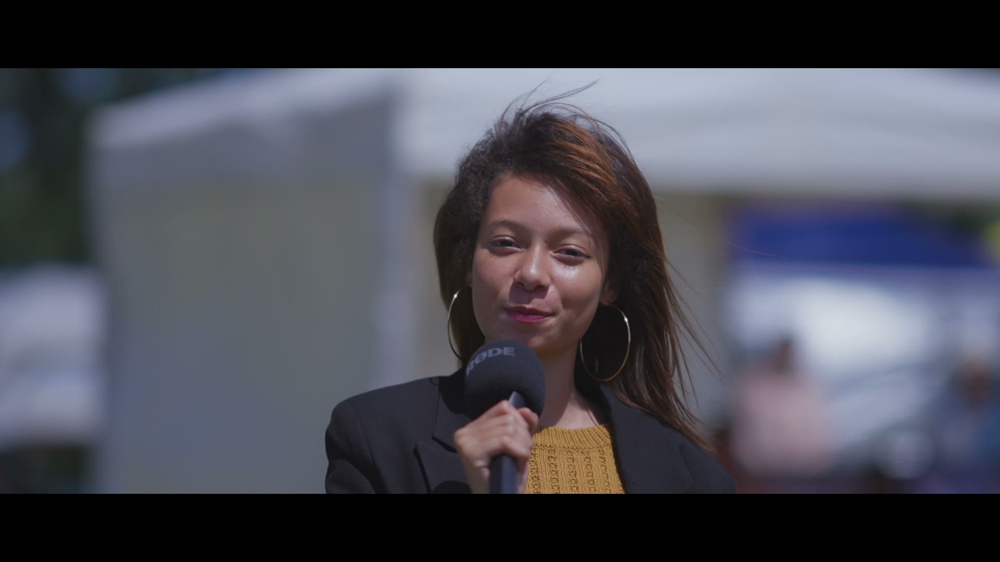
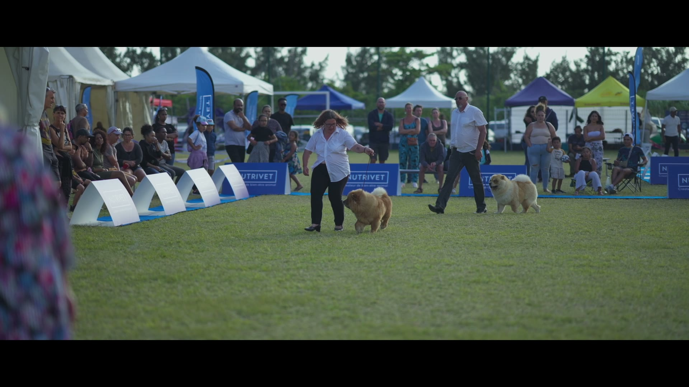
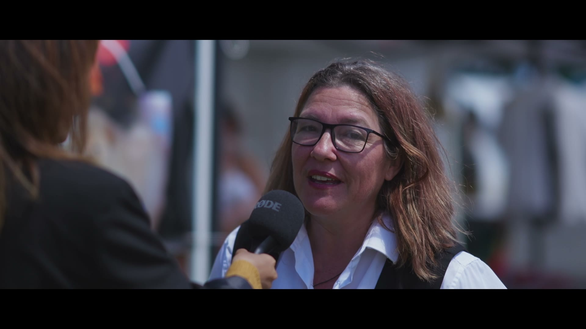
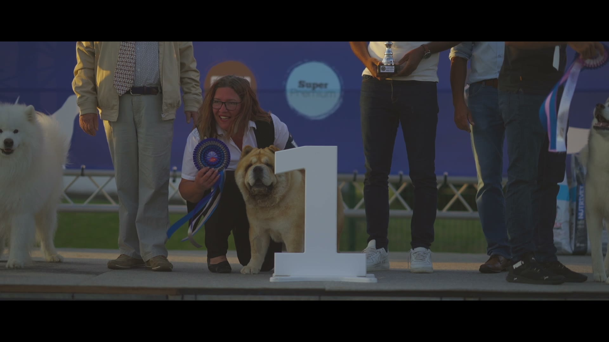

Le rendez-vous des chiens & des chats péi.
On filme, on informe, et on met en lumière celles et ceux qui font du bien aux animaux à La Réunion — des refuges aux éleveurs, des vétos aux familles.
Kat'Pat', c'est le futur point de repère péi pour tout ce qui touche aux chiens et aux chats : des conseils utiles adaptés à notre île, de quoi aider un animal perdu ou à adopter, et un coup de projecteur sur les associations et les pros qui s'en occupent.
On le construit petit à petit, dans l'ordre : d'abord ce qui sert vraiment, le reste vient ensuite. Cette page grandit à chaque étape.
Des conseils adaptés à notre climat (tiques, leptospirose, chaleur…). On t'oriente — c'est ton vétérinaire qui décide.
BientôtUne page claire, reliée aux groupes Facebook qui marchent et aux associations. On structure, on ne remplace pas.
BientôtLes associations mises en lumière, et les bons professionnels (vétos, toiletteurs, pensions) près de chez toi.
Bientôt



Images d'un reportage Kat'Pat' tourné lors d'un concours de Chow-Chow à La Réunion — Full HD, présentation, interviews et remise des prix. Une vidéo, ça vaut mille promesses.